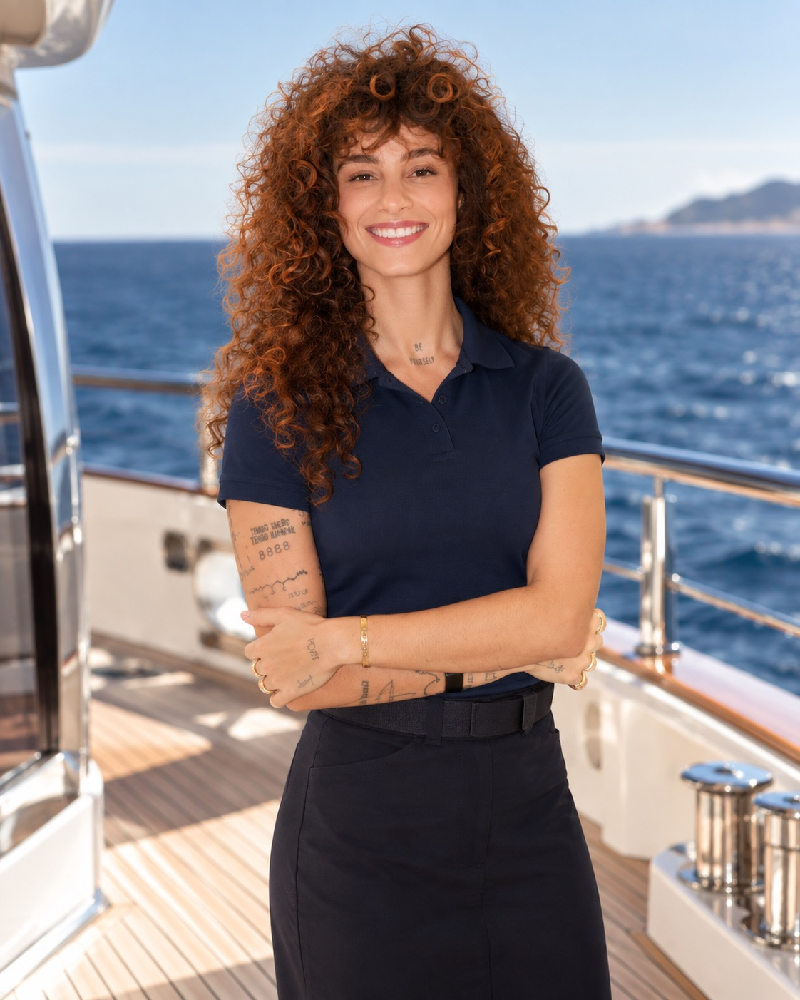
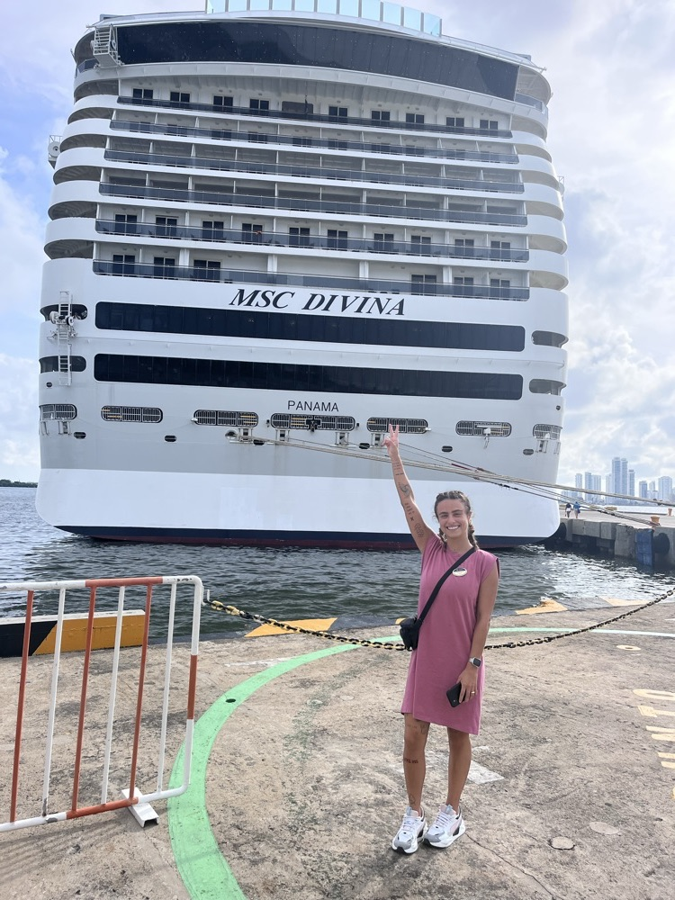
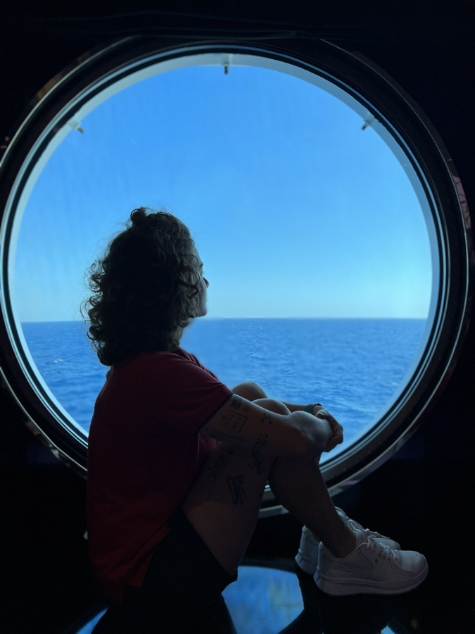
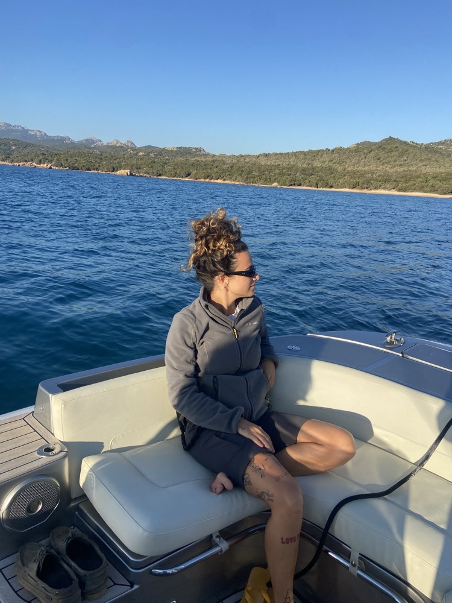
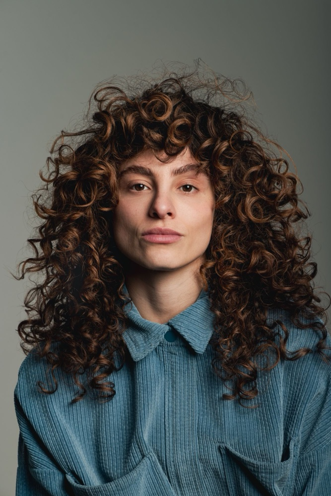
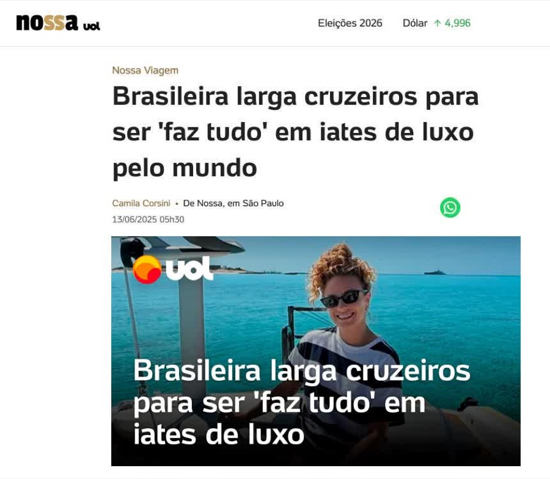
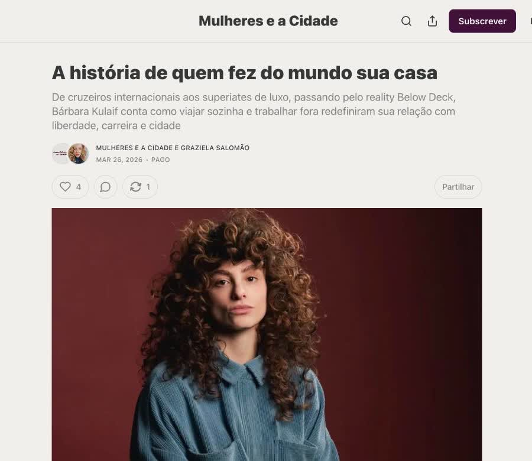
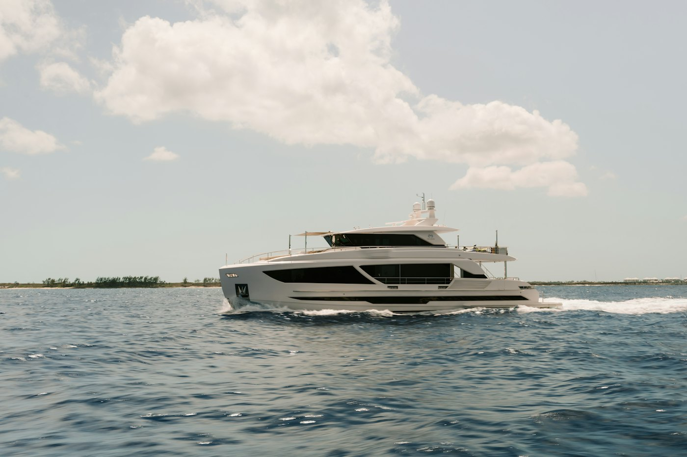

Dream of working while traveling the world
You want to turn your love of travel into a career.
From day one to your first job on board: clear information, a real strategy and a community of people who are on this path or have already been there.
 Bárbara Kulaif
Bárbara Kulaif
Bárbara has spent more than 9 years working on board: 6 on cruise ships with MSC Cruises and the rest on Luxury Yachts. She started as a Junior Stewardess, worked her way up to Chief Stewardess and was on Season 12 of Below Deck.
When she decided to switch to Yachts, it took her almost eight months to land her first job, because there was no clear information and no one to guide her. That's why the mentorship exists: so you don't have to go through the same thing. We show you exactly what to do and support you at every step.
Bárbara started out barely speaking English. Every step taught her something, and that's what she shares in the mentorship.

6 yearsShe started working on cruise ships barely speaking English. As part of the entertainment team, she learned English, Spanish and Italian, and got used to a tough routine with long hours on her feet, which prepared her for anything life on board could bring.

Almost eight monthsOne day, while watching a show about life on board, she decided she wanted to work on Luxury Yachts. It took her almost eight months to get her first job, with no clear information and no one to guide her.

La Spezia, ItalyHer first job finally came through: Junior Stewardess on a Yacht in La Spezia, where she stayed for over a year and learned a lot.

TodayMore than 9 years on board, on cruise ships and Yachts. She still works as a Chief Stewardess and, through the mentorship, helps other people get there faster and with a clear plan.
“A R$ 55,000 salary and billionaire destinations: the daily life of a Brazilian woman working on international Luxury Yachts”
Read the article →
UOL · Nossa June 2025 · in Portuguese“Brazilian woman leaves cruise ships to become a do-it-all crew member on Luxury Yachts around the world”
Read the article →
Mulheres e a Cidade Interview · in Portuguese“The story of someone who made the world her home”
Read the article →You want to turn your love of travel into a career.
You want unique experiences and memories you'll never forget.
You want to get paid in a strong currency doing something you love.
On board, your room and meals are covered by the Yacht.
You're starting from zero, but you're ready to learn.
And now you want to switch to Yachts.

A Yacht CV has its own rules. Download the free guide (in Portuguese) to see where each piece of information goes, the mistakes that get a CV rejected, and a template ready to fill out.
Both formats last 6 months, are 100% online and include the WhatsApp group with all the students. The difference is how much personal support you get.
A private session to go over your background, an action plan built around you and twice as many live meetings.
The full picture of the Yachting industry, shared with people who are breaking in at the same time as you.
We can set up a private class just for your group, from 2 to 10 people, with special pricing and a format built around you. You learn together, support each other and get into the industry together.

From day one to the end of the 6 months, you're never on your own. After that, you can renew if you want.
Share experiences and connect with people on the same path, plus a Q&A with Bárbara every Monday.
All the students together, from both formats: 2 per month for One-on-one and 1 per month for Group. A place to share experiences, help each other and build connections.
Share your updates in the group and get guidance at every stage of the hiring process.
A complete checklist, templates and sample CVs to help you all the way to your first boat.
Students get special deals with our partners in Brazil for documents and everything you need before joining a Yacht.
Send us a message on WhatsApp. We'll explain how everything works, answer your questions and help you choose between One-on-one and Group.
Fill out the sign-up form and accept the contract (in Portuguese) right there. There's nothing to sign or send back. Then pay by Pix, credit card, or in dollars or euros through Wise.
For One-on-one, you pick the day and time of your session. For Group, we send you the dates on WhatsApp. Either way, you join the exclusive students' group right away.
No. The mentorship was designed for people starting from zero and also for those who have worked on cruise ships and want to switch to Yachts.
Yes. On board, you use English every day with guests and crew, so ideally you should feel confident holding a conversation. If your English is still a work in progress, the mentorship helps you plan for that alongside the other steps.
Your choice: English, Portuguese or Spanish.
No. The mentorship is guidance: we show you the way, build a strategy with you and support you at every step, but getting hired depends on each hiring process.
Everything happens live on Google Meet. Your first meeting is your 90-minute session: for One-on-one, it's just you and Bárbara; for Group, up to 5 people per class. After that, there are live meetings with all the students: 2 per month for One-on-one (13 in total) and 1 per month for Group (7 in total).
You join the exclusive students' group, where you can ask questions every Monday, plus live meetings on Google Meet (2 per month for One-on-one and 1 per month for Group). You also get the Support Material (PDF).
Send us a message on WhatsApp and we'll walk you through the pricing for each format and the payment options. If you live outside Brazil, you can pay in dollars or euros through Wise.
Send us a message on WhatsApp: we'll go over the details, answer your questions and help you choose the best format for you.
Message us on WhatsApp